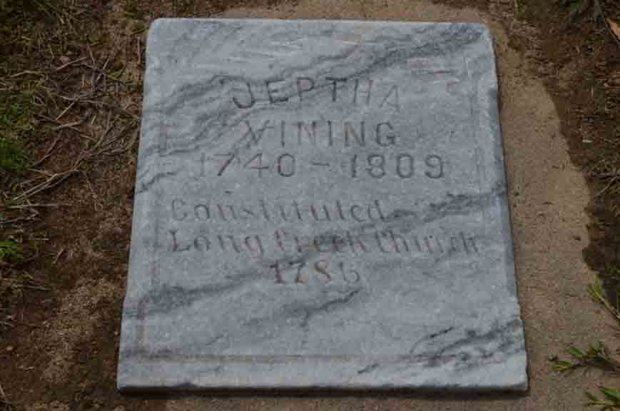
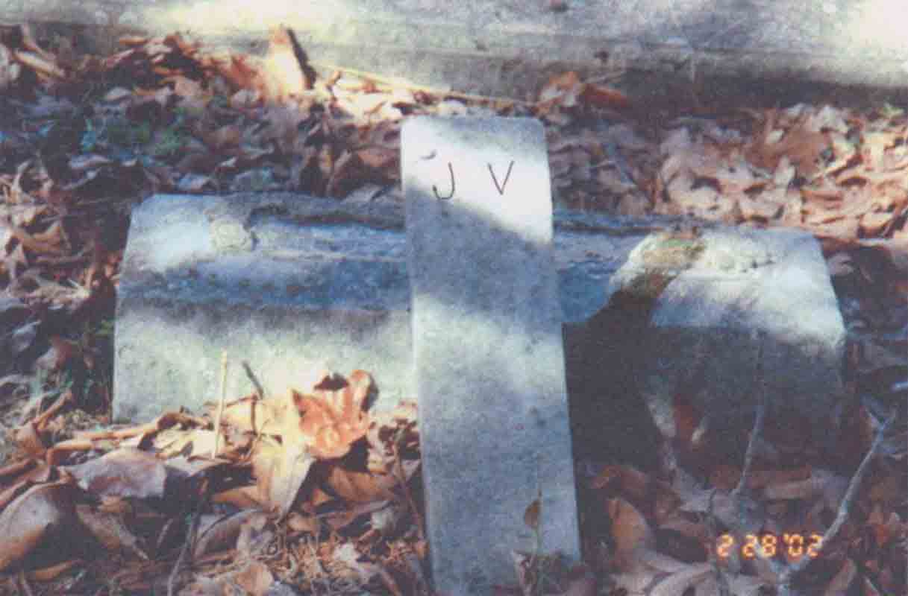

Documentation for Jeptha Vining - [...]
Family Data
The following is from a letter typed on 5 October 1966 by a Mrs. Harry W. Maxfield of New Orleans, Louisiana.
He [Jeptha] was a Baptist minister who was b. 2-15-1738 in Sutton, Boston, Mass. ... He first m. Amy Miller and their ch. were: Mary, Thomas (my [i.e., Mrs. Maxfield's] ancestor), Ann, Joshua, Abigail, Uriah and Matthew. This is from "S. C. Baptists-1670-1800" by Leah Townsend, 1935. She quotes from "Asphund's Register" 6th edition, in her book. Jeptha went to Anson Co., N.C., then to S.C., then Warren Co., Ga. where he helped organize the Long Creek Church and where he was buried. He had m. second a Miss Radcliffe. His son Thomas was b. 1755 [here a handwritten marginal notation says "this from his obit but sounds too early if father's birth date is correct."] and died 1826 Limestone Co., Ala. I feel sure Jeptha was a brother of John Vining, Sr., b. 1725 in Mass., d. 1801 Ga., m. Sarah Radcliff and had ch.: Sarah, Cadar (or Keedar), Wm., Shadrack, John, Jesse, Ann, Abegill. Think Jeptha also a bro. of Jesse b. 1730, d. 1800, m. Miss Hilson; lived in S.C.; ch.: Jesse and 2 dau. I do hope you have information about Jeptha's parents--thought perhaps his mother was named Abegail ... .
Death Data
Memorial stone for Jeptha Vining, in Long Creek Baptist Church Cemetery, Warren County, Georgia; placed in the cemetery by the church. Cynthia L. (Vining) Dean, a descendant of Jeptha through son Thomas reports that she has found his footstone (“J. V.”) in the cemetery.

footstone for Jeptha Vining, in Long Creek Baptist Church Cemetery, Warren County, Georgia (source: Cynthia L. (Vining) Dean).
